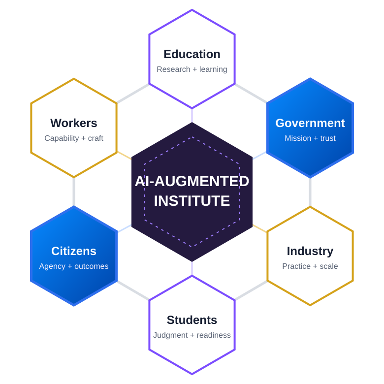

Public mission
Ground research and practice in real outcomes, consequential work, and public purpose.
Government organizations face a distinct challenge: increasing capability with AI while maintaining accountability, public trust, institutional knowledge, mission effectiveness, and human responsibility. The Institute provides a neutral environment to research, test, teach, and share what works.

Why this sector matters
Government brings complex missions, public accountability, workforce scale, policy realities, and direct societal impact. Those conditions make the public sector essential to understanding responsible augmentation—not only technology adoption.
Ground research and practice in real outcomes, consequential work, and public purpose.
Strengthen verification, evidence, governance, transparency, and human responsibility.
Study how large, diverse workforces develop AI literacy and role-specific capability.
Connect internal augmentation to service quality, access, trust, and public value.
Curriculum
Public-sector capability cannot depend on one-time tool training. Government partners can use and shape curriculum for executives, managers, practitioners, technical teams, and mission specialists—then contribute cases and evidence that make the curriculum more relevant across agencies and jurisdictions.
Partners can access, adapt, test, and contribute curriculum. Learning assets become part of a continuous research → practice → evidence → education → adoption loop rather than a static content library.
Ways to engage
Participation is designed around real institutional or operational priorities. Start narrowly, contribute where you have distinctive strength, and deepen the relationship as mutual value becomes clear.
Study human + AI collaboration in consequential public environments.
Build role-based literacy, professional development, and train-the-trainer programs.
Test workflow patterns, assessments, runbooks, and operating models.
Develop evidence around verification, accountability, policy, and responsible use.
Connect agencies, universities, industry, and practitioners around shared challenges.
Shared access
Curriculum, assessments, validated practices, research, cases, governance patterns, measurement approaches, and communities of practice that can accelerate responsible public-sector capability.
Shared contribution
Mission use cases, operational evidence, workforce needs, policy and governance questions, pilots, cases, lessons learned, comparative studies, and public-sector perspectives that improve the shared Body of Knowledge.
Shared body of knowledge
Where appropriate, outputs contribute to the AI-Augmented Body of Knowledge: shared research, curriculum, validated practices, case studies, measures, patterns, terminology, assessments, and implementation lessons that others can build on.
A common capability lens
Research, curriculum, assessment, and practice connect across individuals, teams, and organizations.
| Individual | Team | Organization | |
|---|---|---|---|
| LEARN | Understand AI and develop judgment. | Build shared language, norms, and literacy. | Develop institutional understanding and readiness. |
| APPLY | Use repeatable practices on real work. | Integrate AI into workflows and collaboration. | Establish governance, patterns, and operating practices. |
| AUGMENT | Extend individual capability. | Redesign how teams create and decide. | Transform organizational capability and operating models. |
Start with a 90-day collaboration
Start with one mission workflow, workforce capability need, governance question, or cross-agency challenge. Define the evidence to capture, run a focused 90-day collaboration, and turn the learning into reusable practice and curriculum.
60–90 minute executive conversation around priorities and current AI work.
Choose one meaningful research, curriculum, practice, or convening opportunity.
Agree on participants, contributions, outputs, evidence, and success measures.
Execute the focused initiative and capture evidence as you work.
Capture learning, decide what can be shared, and determine next steps.
Common questions
These answers explain how government organizations can participate in the Institute.
It is a collaboration to research, test, teach, and share human + AI practices for public missions, workforces, governance, and citizen outcomes.
Government partners can contribute mission use cases, operational evidence, workforce needs, policy questions, pilots, cases, lessons learned, and public-sector perspective.
It begins with one mission workflow, workforce capability need, governance question, or cross-agency challenge, followed by a focused 90-day collaboration.
Founding collaboration
Early collaborators can influence the research agenda, shared language, curriculum, pilots, measurement approaches, publications, and the structure of the consortium itself.
The first step is a conversation, not a commitment.